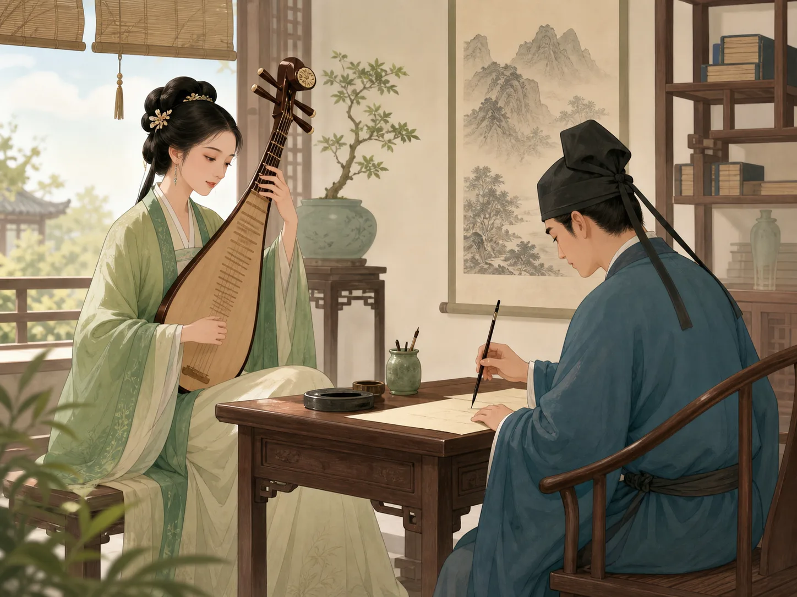

宋词：唱着歌的诗
Song Ci: Poems That Were Sung
Page 1
唐诗常常是念的，宋词本来更像唱的
Tang Poems Are Often Recited, but Song ci Began Closer to Singing

Different writers could fit new words into the same tune. Song ci and music originally stayed very close together.
很多人第一次读宋词，会先觉得它和唐诗不太一样。唐诗常常像一句一句念出来，宋词却更像是顺着曲子流出来。
很早的时候，词本来就是要配着曲调唱的。同一个调子，不同的人可以填进不同的词，于是有人写思念，有人写热闹，也有人写伤心。
所以词虽然也写在纸上，可它身上常常还带着一点声音。你就算没有真的听到曲子，也会觉得句子像在轻轻往前走。
When many people first read Song ci, they feel that it moves differently from Tang poetry. Tang poems are often spoken line by line, but Song ci seems to flow along with a tune.
Long ago, ci was closely tied to music. Different writers could place different words into the same tune pattern. One person might write about longing, another about lively celebration, and another about sorrow.
So even when a ci poem sits quietly on paper, it often still feels as if a little music remains inside it. You may not hear the melody, but the lines seem to move forward gently.
Page 2
苏轼把想念挂在月亮上
A famous Song dynasty writer and poet who is also called Su Dongpo. Hung His Missing Feeling on the Moon
On a Mid-Autumn night, Su Shi looks at the moon and thinks of his younger brother far away.
苏轼最有名的一首词之一，是中秋写给思念的。《水调歌头》里，他一边看月亮，一边想着远方的弟弟苏辙。
最打动人的地方，是他没有只说“我很想你”。他把思念放到月亮上，说就算人离得很远，也还能共看一轮月亮。
这样一来，想念就不只属于他一个人了。很多后来的人一读到这里，都会觉得：对啊，虽然不在一起，可也许还能望着同一片月光。
One of Su Shi's most famous ci poems is about missing someone at Mid-Autumn. In Prelude to Water Melody, he looks at the moon and thinks of his younger brother, Su Zhe, far away.
What touches readers most is that he does not simply say, "I miss you." He places that feeling on the moon and says that even when people are far apart, they can still share the same bright round light.
That is why the poem grew larger than one family's story. Many later readers felt the same thing: we may not be together, but perhaps we can still stand under the same moonlight.
Page 3
李清照把自己的一生，从亮处写到暗处
One of China's most famous women poets, known for writing both lively and sorrowful song lyrics. Wrote Her Life from Bright Days into Darker Ones
In youth, her poems can feel like a boat drifting into lotus flowers. Later, the lines grow colder and heavier.
李清照年轻时写的词，常常很轻快。你会看见小船、荷花、晚风，还有一个人玩得高兴，差点忘了回家。
可后来，世道变了。她一路逃难，家里的珍藏散了，丈夫也去世了。她再写词的时候，声音就慢慢沉下来了。
这也是宋词特别动人的地方。它不只会写一个景，还常常会把一个人的一生、她心里越来越重的感觉，也一起写进去。
Li Qingzhao's early ci poems often feel light and lively. You can see a little boat, lotus flowers, evening air, and someone having such a good time that she almost forgets the way home.
Later, the world around her changed. She fled from place to place, family treasures were scattered, and her husband died. When she wrote again, the sound of the poems slowly sank lower.
That is one reason Song ci can move people so deeply. It does not only paint one scene. It can also carry a whole life and the growing weight inside a person's heart.
Page 4
辛弃疾把上不了战场的力气，写进了词里
A Song dynasty poet who also had real military experience and wrote powerful emotional lyrics. Poured His Unused Battle Strength into His Poems
辛弃疾年轻时真的带过兵，也真的想为国家打仗。可后来，他常常被放在后方，最想做的事做不成。
于是，那股力气没有消失，而是进了词里。你读他的词，会感觉到灯光、剑、号角，还有一个人心里一直没有熄掉的火。
所以宋词并不总是轻轻柔柔的。它也可以很壮，很急，很像有人把心里的话压了很久，终于一下写了出来。
When Xin Qiji was young, he really did lead soldiers, and he truly wanted to fight for the country. Later, he was often kept away from the front, unable to do the thing he most wanted to do.
So that force did not disappear. It went into his poems. When you read him, you can almost feel lamplight, a sword, a horn call, and a fire inside a person that never went out.
That is another important thing about Song ci. It is not always soft and gentle. It can also be strong, urgent, and full of words that seem to have been held in the heart for a very long time.
小结
In Summary
宋词本来和音乐很近，所以它常常特别贴着人的心走。苏轼借月亮写思念，李清照把人生的轻和重都写了进去，辛弃疾又把压在心里的力量写得很响。
词有时候不长，可它像会唱一样，所以感情也常常走得更深。
Song ci began close to music, so it often travels very near the heart. Su Shi used the moon to speak about missing someone. Li Qingzhao wrote both the light and heavy parts of a life. Xin Qiji turned hidden strength into ringing lines.
These poems are not always long, but because they still feel close to singing, their feelings often reach very deeply.